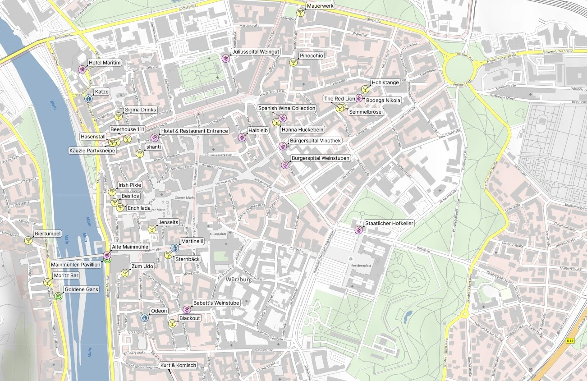
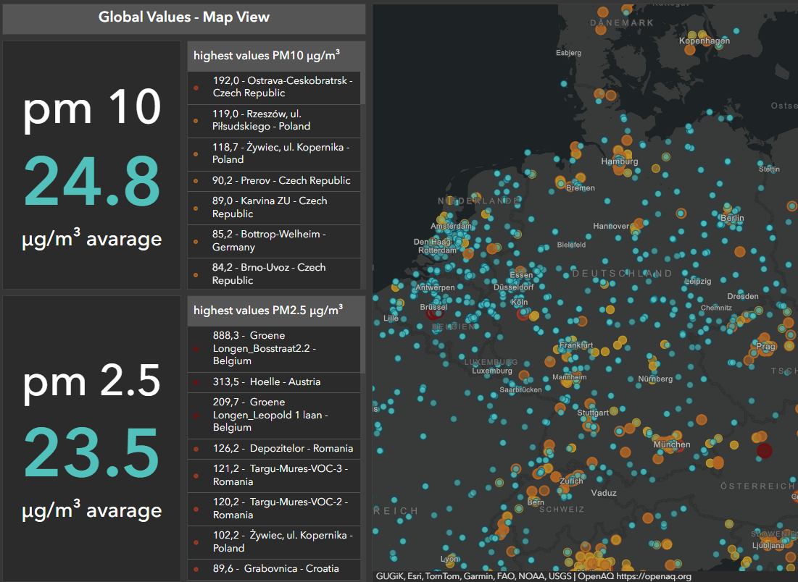
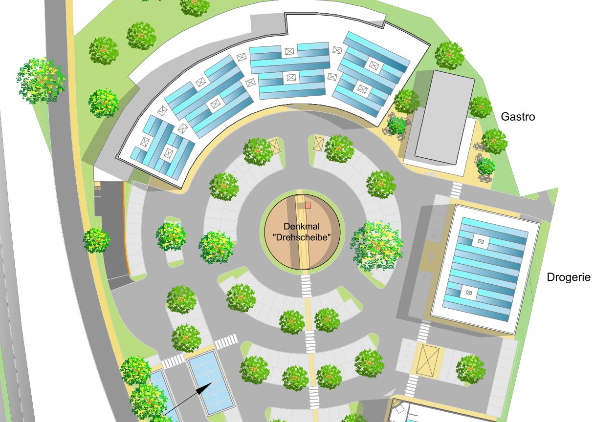
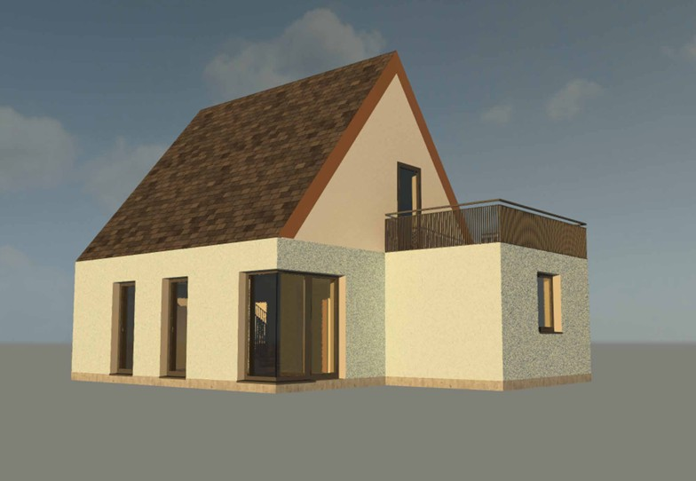
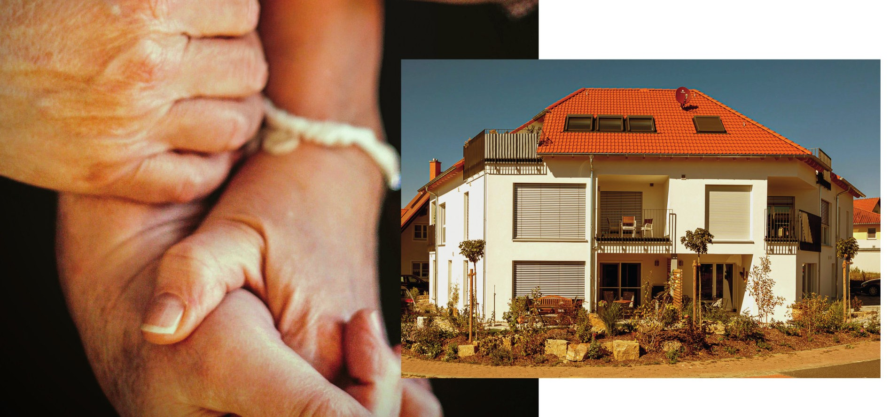

ArcGIS Pro
ArcGIS ist eine umfassende geografische Informationssystem (GIS)-Plattform von Esri, die es Fachleuten und Organisationen ermöglicht, geografische Daten zu erstellen, zu verwalten, zu analysieren, zu visualisieren und zu teilen.

ArcGIS Online
Mit der GIS-Kartenerstellungssoftware kann man Geodaten in interaktive Webkarten verwandeln und GIS-Web-Apps erstellen.

AutoCAD
CAD steht für "Computer-Aided Design" und bezeichnet den Einsatz von spezialisierter Software zur Erstellung, Analyse und Bearbeitung von technischen Zeichnungen und Modellen in einer digitalen Umgebung.

3ds MAX
Autodesk 3ds Max, ist eine professionelle Lösung für Modellierung, Rendering und Animation in 3D und ermöglicht die Erstellung großflächiger Welten und hochwertiger Designs.

Revit 2024
Revit ist eine Software die zur Planung, Modellierung und Dokumentatin von Gebäuden dient.

Design
Umgang mit Adobe Photoshop und Lightroom.

Fotografie
Fotografieren mit Spiegelreflex Kamera als Hobby und für Photogrammetrie.